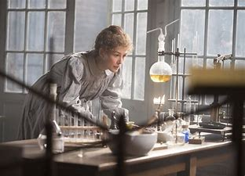

She was the first woman to win a Nobel Prize, the first person and the only woman to win the Nobel Prize twice,
and the only person to win the Nobel Prize in two scientific fields. Her husband, Pierre Curie, was a co-winner
on her first Nobel Prize, making them the first ever married couple to win the Nobel Prize and launching the
Curie family legacy of five Nobel Prizes. She was, in 1906, the first woman to become a professor at the
University of Paris.

Marie Curie was a Polish and naturalized-French physicist and chemist who
conducted pioneering research on radioactivity.
Honours and tributes
In 1995, she became the first woman to be entombed on her own merits in the Panthéon, Paris.
In a 2009 poll carried out by New Scientist, she was voted the "most inspirational woman in science".
Curie received 25.1 percent of all votes cast, nearly twice as many as second-place Rosalind Franklin
(14.2 per cent).
On the centenary of her second Nobel Prize, Poland declared 2011 the Year of Marie Curie; and the
United Nations declared that this would be the International Year of Chemistry. An artistic installation
celebrating "Madame Curie" filled the Jacobs Gallery at San Diego's Museum of Contemporary Art.
On 7 November, Google celebrated the anniversary of her birth with a special Google Doodle.
On 10 December, the New York Academy of Sciences celebrated the centenary of Marie Curie's second Nobel
Prize in the presence of Princess Madeleine of Sweden.
Awards that she received include
Nobel Prize in Physics (1903, with her husband Pierre Curie and Henri Becquerel)
Davy Medal (1903, with Pierre)
Matteucci Medal (1904, with Pierre)
Actonian Prize (1907)
Elliott Cresson Medal (1909)
Nobel Prize in Chemistry (1911)
Franklin Medal of the American Philosophical Society (1921)
Entities that have been named in her honour include:
The curie (symbol Ci), a unit of radioactivity, is named in honour of her and Pierre Curie (although the commission which agreed on the name never clearly stated whether the standard was named after Pierre, Marie, or both).
The element with atomic number 96 was named curium.
Three radioactive minerals are also named after the Curies: curite, sklodowskite, and cuprosklodowskite.
The Marie Skłodowska-Curie Actions fellowship program of the European Union for young scientists wishing to work in a foreign country is named after her.
In 2007, a metro station in Paris was renamed to honour both of the Curies.
Polish nuclear research reactor Maria is named after her.
The 7000 Curie asteroid is also named after her.
A KLM McDonnell Douglas MD-11 (registration PH-KCC) is named in her honour.
In 2011, a new Warsaw bridge over the Vistula River was named in her honour.
In January 2020, Satellogic, a high-resolution Earth observation imaging and analytics company, launched a ÑuSat type micro-satellite; ÑuSat 8, also known as Marie, was named in her honour.
The Marie-Curie station, a planned underground Réseau express métropolitain (REM) station in the borough of Saint-Laurent in Montreal is named in her honour. A nearby road, Avenue Marie Curie, is also named in her honour.
The molecular docking task CurieMariedock is a component of the Slovenian distributed computing project SiDock (which runs under the aegis of BOINC); its focus is SARS-CoV-2.
If you have time, you should read more about this incredible human being on her Wikipedia entry.